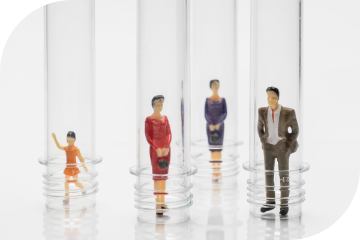

인재상
새로운 도전의 기다림
해태와 함께 미래를 선도할 인재를 찾습니다.
해태 인재상은
해태 기업이념을 실현하기 위해 해태인이 갖춰야 할 기본 정신으로 무한 경쟁 시대에 우리 해태를 최고의 제과전문회사로 발돋움해 나아가기 위한 필수적인 요소입니다.
-
Customer
해태 최고의 가치는 고객민족이며 변화하는 요구를 선도하기 위해 고객을 사랑하는 마음으로 가득찬 해태인이 되어야 합니다. 또한, 우리의 고객에게 최고의 품질의 제품과 서비스를 공급하고자 항상 최선을 다해야겠습니다.
- 
-
Professional
직무분야 최고의 전무가로서 기업뿐 아니라 사회속에서 최고의 인재가 되는 것을 목표로 합니다. 이를 위해 끊임없는 학습을 통한 자기계발욕구와 열정을 지닌 인재를 필요로합니다.
-
Change
기업 존재와 홀동은 변화에 맞추어 나아가만 존속 할 수 있습니다. 해태인의 기본의식은 변화와 혁신을 두려워하지 않고 새로움에 도정하며 능동적인 주체로서 미래를 개척하여 제과 시장의 선두를 확보할 수 있는 패기있는 미래인을 추구합니다.

-
Love&Happy
해태인은 자신을 사랑할 줄 알며 다른 사람도 자신처럼 사랑하고 해태라는 공동체를 사랑해야 합니다.사랑의 행동으로 해태인의 힘이 모아질 때 해태의 힘은 극대화 될 수 있으며 사랑이 있는 기업으로 인식될 떄 사회로부터 사랑을 받을 것입니다. 또한 이러한 사랑을 다시 사회로 환원시켜 나, 우리 해태뿐만 아니라 온 사회를 행복하게 할 것입니다.
우리 해태인은 고객과 사회를 향한 열린 마음을 유지하며 고객에게 얻은 사랑을 사회에 환원히여 보람과 사랑을 실현할 수 있는 참인재를 요구합니다.